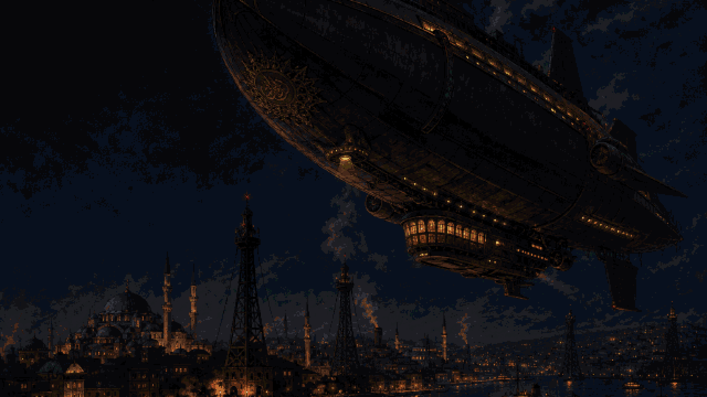
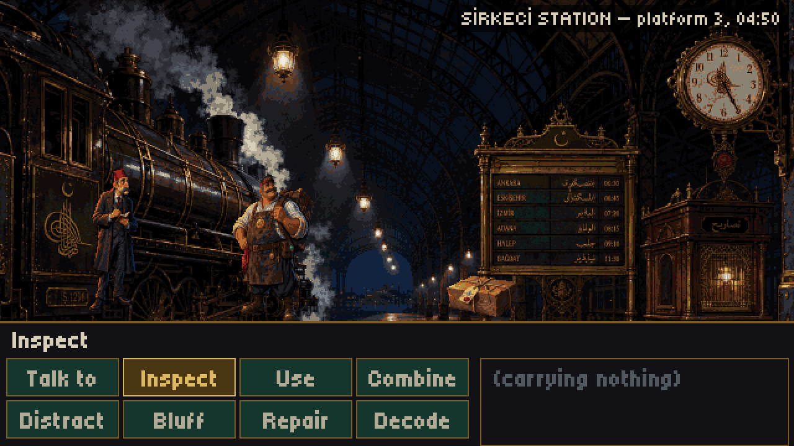
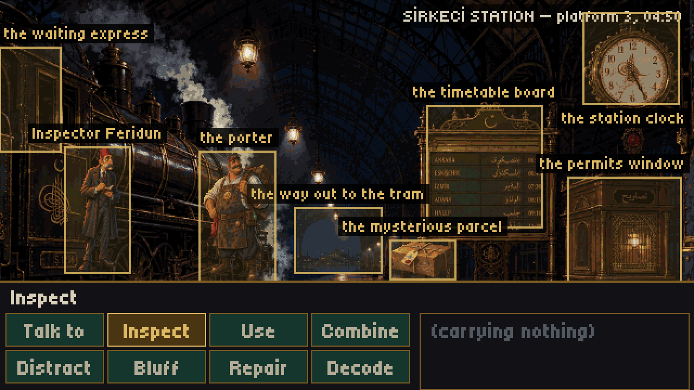
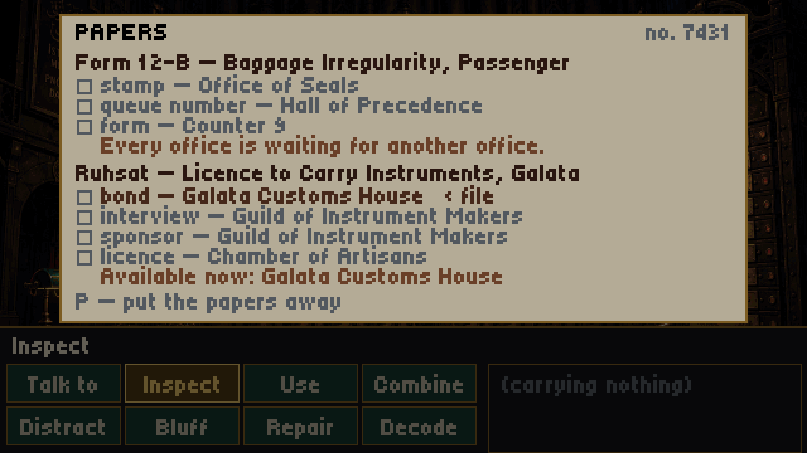
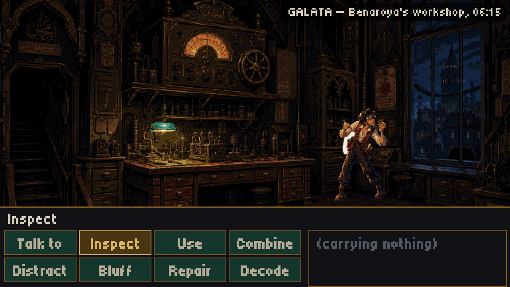
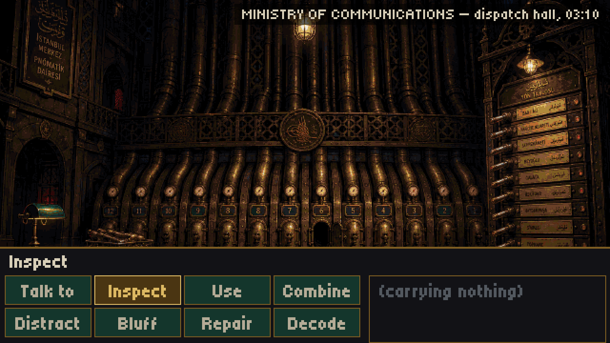
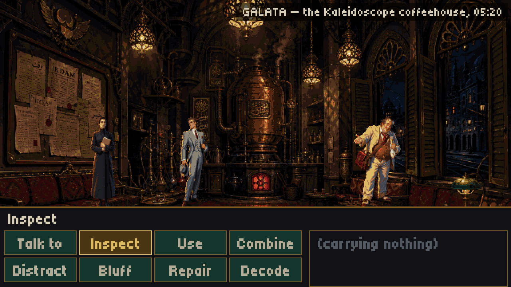
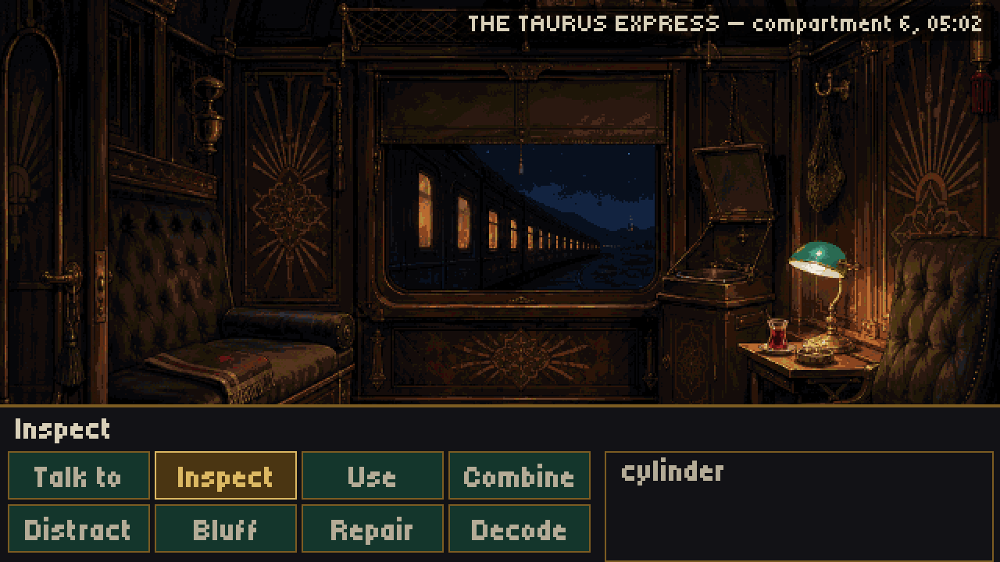
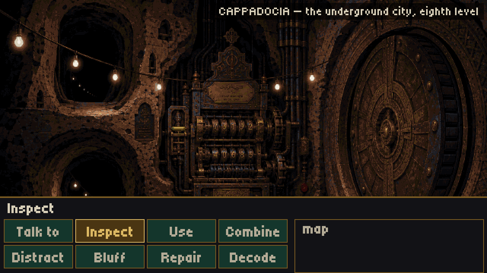
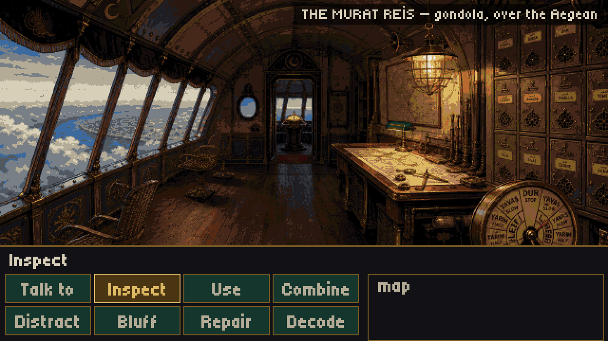

DevelopmentPC · GODOT 4
Devlet-i Aliyye — The Ottoman Commonwealth
Ministry of Communications and Antiquities · Telegraph & Antiquities Service
THE SUBLIME
ENGINE
The proper channels may loop forever. There is always one way in.

It is 1930-something, and the Ottoman Empire never fell. It reformed instead — constitutionalised, industrialised, and came out of the Great War on the winning side. Three continents of railways, telegraph exchanges, airship lanes and quarrelsome provinces, held together by timetables and bargaining.
You are a troubleshooter for the Telegraph & Antiquities service. Part clerk, part engineer, part linguist. At Sirkeci Station a porter hands you a parcel with your name on it, and it is not your parcel.
Inside is a cipher cylinder that carries no message — only gear ratios. The ratios are railway timetables. Within the hour a German courier, a Soviet economist, an English antiquarian and a patient police inspector all want a word.
A point-and-click adventure in the register of the hand-painted 1990s: eight verbs, no inventory-shaped keys, and a bureaucracy you argue with.
02 — On a machine that predicts revolutions
Officially, Project Mizan was an economic planning calculator: rail capacity, grain supply, industrial output. Rooms of brass logic drums and punch cards, driven off a central steam shaft, because in this century a computer is a building and not a thing you carry.
Conspiracy theorists call it the Sublime Engine and say it predicts coups. You may safely assume this is pulp nonsense.
The prime minister who commissioned it understood what had happened and ordered the project dismantled. It was not dismantled. He has been dead some years, and every faction in this story claims to be completing his work. All of them are wrong about what it was.
This is an alternate history. Real people, places and institutions appear in circumstances that never happened, and nothing in it is a claim about any of them.
03 — Photographic record
Captured in engine at 640×360. Every background is lit by a source you can point at — a lamp, a furnace mouth, a signal lantern. Nothing in this world is lit by an overhead sun nobody pays for.


















04 — How it plays
Eight verbs
Chosen so that talking your way past a clerk carries the same weight as opening a door with a crowbar.
- Talk to
- Inspect
- Use
- Combine
- Distract
- Bluff
- Repair
- Decode
The bureaucracy is the puzzle
A document is a dependency graph of endorsements, and the legitimate path is allowed to be a closed ring. The stamp needs the form. The form needs the queue number. The queue number needs the stamp. That circle is the joke and it is also the lock.
House rules
- Bureaucracy is funny; its consequences are not. A form that cannot be filed is comedy. A person who cannot be found because a file was moved is not.
- Everyone is polite. Spies keep meeting socially. Enemies share tables. The manners are real and so are the stakes.
- Technology is infrastructural. If a puzzle could be solved by a device in someone's pocket, it is the wrong puzzle for this world.
- The alternate history creates new problems, never a utopia. Anything that reads as wish-fulfilment is wrong.
- No ethnicity is the villain. The antagonist is an idea about how states should be governed, held by a man who believes he is finishing a hero's work.
- Failure should usually produce a comic consequence or another route — not a game-over screen.
- The whole chapter is played by the test suite, start to finish, because a puzzle chain can be correct at every link and still be unwinnable as a whole.
Turkish, properly
The game ships in English and Turkish. The Turkish is not a gloss: it is written in an Ottoman register to match the setting, verb-last with the case suffixes no template can inflect, which is why the sentence templates are themselves translated. Devlet-i Aliyye is not a translation of "the Commonwealth" — it is what the Ottomans called their own state.
05 — Notification of release
No storefront has been assigned to this docket yet. To be notified when it opens, file a request with the issuing office — or consult the bureau's public board.
Issued by Gand Games. No ads. No tracking. The price, when it is assigned, is the price.